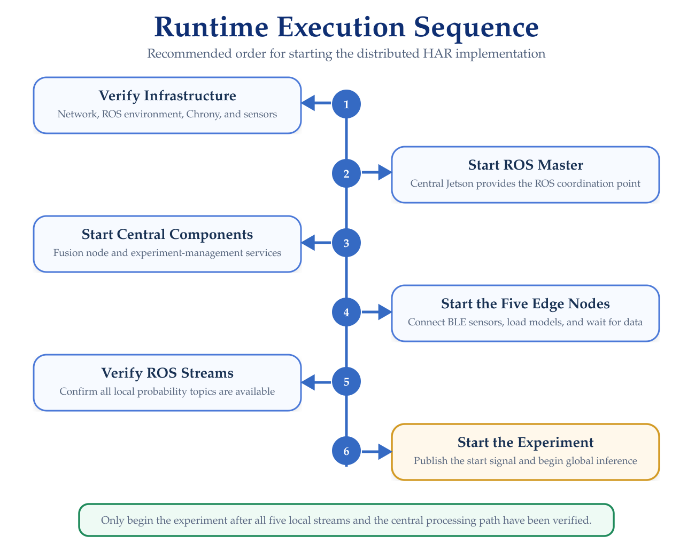
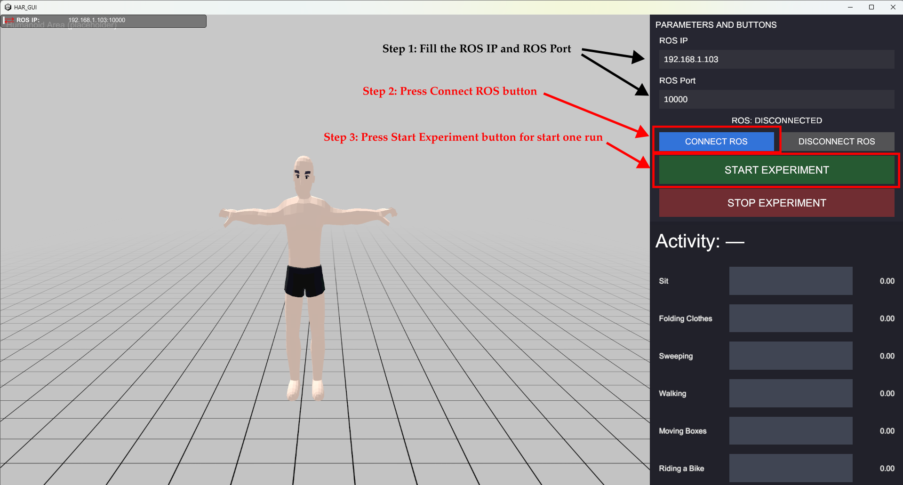
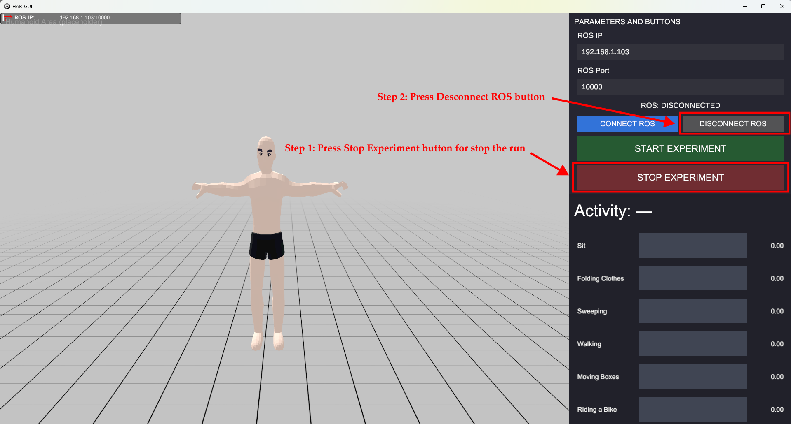

Running the Framework
Starting and Operating the Distributed HAR System
This section describes the recommended procedure for starting and verifying the complete HAR Distributed Framework.
At this stage, the Jetson devices, software environment, network configuration, clock synchronization, and wearable sensors should already be prepared.
Runtime Sequence
The recommended startup sequence is illustrated in Figure 1.

The system should be started incrementally rather than launching all components simultaneously.
This makes it easier to identify problems associated with ROS communication, wearable sensors, model loading, or distributed synchronization.
1. Verify the Distributed Infrastructure
If you already have all the ROS and Chrony settings configured, you can skip this step.
Before launching the inference components, verify that all Jetson devices can communicate with the central node.
From each edge device:
ping <CENTRAL_IP>Verify the ROS configuration:
echo $ROS_MASTER_URI
echo $ROS_IPClock synchronization should also be confirmed:
chronyc trackingand:
chronyc sources -vDetailed configuration is documented in Network & Time Synchronization.
2. Start the ROS Master (Required)
The central Jetson acts as the ROS master. On the central device, we need to run these two commands: the first is to start ROS, and the second is to establish communication between the framework and the graphical interface:
roscore
roslaunch ros_tcp_endpoint endpoint.launchKeep this process running during the complete experiment.
From another terminal or edge node, verify access using:
rostopic list3. Prepare the ROS Workspace
If you already have all the ROS workspace configured, you can skip this step.
On every device, load the ROS environment used by the framework.
source /opt/ros/noetic/setup.bashIf the custom har_msgs package is contained in a Catkin workspace, also source the workspace:
source <CATKIN_WS>/devel/setup.bashThe exact workspace path depends on the installation.
Verify that the custom probability message is available:
rosmsg show har_msgs/ProbsA valid output confirms that the ROS environment can locate the custom message definition.
4. Start the Central HAR Node
The central fusion implementation is provided by:
central_node_ros_main.py
From the directory containing the script and the trained central model:
python3 central_node_ros_main.pyIt is also possible to run both the central node and all the Experiment Manager nodes using this command:
roslaunch har_node_central central_node.launchThis is a ROS package created specifically to run all 5 nodes simultaneously. You can create this package by configuring the relevant settings. The central implementation loads:
nn_central_fold1.pth
and initializes the ROS node:
/central_har_node
At startup, the central node waits for the system-level execution signal:
/har/start
The node initially prefers synchronized operation using Approximate Time Synchronization and automatically manages fallback behavior if the distributed streams become unavailable.
Verify that the central node exists:
rosnode list5. Start the Experiment Manager
The experiment manager is implemented by:
experiment_manager_node.py
har_aggregator_and_relay.py
har_start_latch_relay.py
results_exporter_node.py
Start it from the central Jetson:
python3 experiment_manager_node.py
python3 har_aggregator_and_relay.py
python3 har_start_latch_relay.py
python3 results_exporter_node.pyThe node listens to:
/har/start
and:
/har/probs/global
It also subscribes to the five local prediction streams.
When an experiment begins, the manager creates a run directory under:
~/har_runs/
using a run identifier based on the current date and time.
The generated experiment files are documented in Experiments & Logs.
6. Start the Edge Nodes
Each wearable sensing location runs an independent Python process.
The confirmed local scripts include:
chest_node_ros.py
left_hand_node_ros.py
right_hand_node_ros.py
left_knee_node_ros.py
right_knee_node_ros.pyUse the actual filenames distributed with the implementation.
Chest Node
On the Jetson assigned to the chest sensor:
python3 chest_node_ros.pyThe implementation connects to the assigned MetaMotionRL sensor, loads the local CNN-LSTM model and scaler, and prepares the ROS publishers.
Left Hand Node
On the corresponding edge Jetson:
python3 left_hand_node_ros.pyRight Hand Node
On the corresponding edge Jetson:
python3 right_hand_node_ros.pyLeft Knee Node
On the corresponding edge Jetson:
python3 left_knee_node_ros.pyRight Knee Node
On the corresponding edge Jetson:
python3 right_knee_node_ros.pyEach local node should remain running after establishing the BLE connection.
Start and verify one local node at a time.
Do not continue to the experiment stage until all five wearable sensors are connected and the five local ROS nodes are running.
7. Verify the Local Nodes
Check the active ROS nodes:
rosnode listThe distributed implementation should expose the five local inference roles:
/chest_node
/left_hand_node
/right_hand_node
/left_knee_node
/right_knee_nodeThe central node should also appear as:
/central_har_node
8. Verify the Prediction Topics
Before sending the start signal, inspect the available topics:
rostopic listThe local prediction channels are:
/har/probs/chest
/har/probs/left_hand
/har/probs/right_hand
/har/probs/left_knee
/har/probs/right_kneeThe global prediction channel is:
/har/probs/global
Additional visualization and control topics include:
/har/probs/global_ui
/har/start
/har/start_uiThe communication architecture is documented in Communication & Synchronization.
9. Verify Local Prediction Streams
Before starting a formal experiment, verify that each edge stream is available.
For example:
rostopic echo /har/probs/chestand:
rostopic hz /har/probs/chestRepeat the verification for all five nodes.
A complete deployment should provide active streams from:
Chest
Left Hand
Right Hand
Left Knee
Right Knee10. Start the HAR Pipeline
The local and central inference components wait for the system-level control topic:
/har/start
A True value activates the inference pipeline.
To start the experiment, simply enter the ROS Master’s IP address and port into the GUI. Once all the nodes both local and central are running, click the Start.

For command-line testing, the signal can be published manually, this is not recommended, unless you do not want to run the graphical interface:
rostopic pub -1 /har/start std_msgs/Bool "data: true"Once the start signal is received:
- The local nodes begin processing sensor windows;
- Local CNN-LSTM inference generates probability vectors;
- Predictions are transmitted to the central node;
- The central node synchronizes the distributed streams;
- The fusion model generates the global prediction; and
- The experiment manager begins recording runtime information.
11. Verify Global Inference
Monitor the central output:
rostopic echo /har/probs/globalCheck its rate using:
rostopic hz /har/probs/globalA valid global message should contain a six-class probability vector generated by the central fusion model.
If local topics are active but no global prediction is produced, troubleshoot the synchronization and central-processing stages.
12. Unity-Based Execution Control
The implemented visualization architecture also supports external start and stop commands through:
/har/start_ui
The Unity interface sends the user-interface command to the experiment-control layer, which provides the system-level:
/har/start
Signal consumed by the local and central inference nodes. The visualization receives the global HAR output through:
/har/probs/global_ui
This allows the complete experiment to be operated from the graphical interface without modifying the local inference processes.
13. Stop the Experiment
To stop the inference pipeline just press the stop button in the GUI:

Or if you want to do it manually via the terminal, only if the graphical interface is not being used:
rostopic pub -1 /har/start std_msgs/Bool "data: false"The edge nodes stop generating new inference outputs and the central node stops publishing global predictions. To stop each of the local nodes as well as the central node, you must press the key combination CTRL+C
The experiment manager closes the active experiment files and writes the corresponding run summary.
14. Shut Down the Runtime
After stopping the experiment:
- Verify that the experiment files were saved;
- Stop the local Python processes;
- Stop the central processing components;
- Disconnect the wearable sensors if required; and
- Terminate
roscoreafter all ROS processes have finished.
Use Ctrl+C to terminate foreground ROS or Python processes safely.
Runtime Verification Checklist
Before collecting experimental data, confirm:
[ ] ROS master running
[ ] Central HAR node running
[ ] Experiment manager running
[ ] Chest edge node running
[ ] Left Hand edge node running
[ ] Right Hand edge node running
[ ] Left Knee edge node running
[ ] Right Knee edge node running
[ ] Five wearable sensors connected
[ ] Five local probability topics active
[ ] Global prediction topic available
[ ] Chrony synchronization healthy
[ ] Start/stop control working
[ ] Experiment logging enabledTroubleshooting
A Local Node Cannot Connect to Its Sensor
Return to Wearable Sensor Setup and verify the BLE device, Bluetooth interface, and sensor assignment.
A Local Model Does Not Load
Verify that the model and scaler files are located in the directory expected by the corresponding Python script.
The deployed model configuration is documented under Models & Data.
Local Topics Are Missing
Verify that:
- The local Python process is running;
- ROS environment variables are correct;
har_msgsis available;- The edge node can reach the ROS master; and
- The sensor connection completed successfully.
All Local Topics Exist but Global Predictions Are Missing
Verify the central node and synchronization behavior under Communication & Synchronization.
Experiment Files Are Not Created
Verify that experiment_manager_node.py is running and receiving the /har/start signal.
The default experiment directory used by the implementation is:
~/har_runs/
Next Step
Continue with:
The next section documents the experiment directory structure, generated CSV files, recorded fields, timing measurements, and analysis workflow.